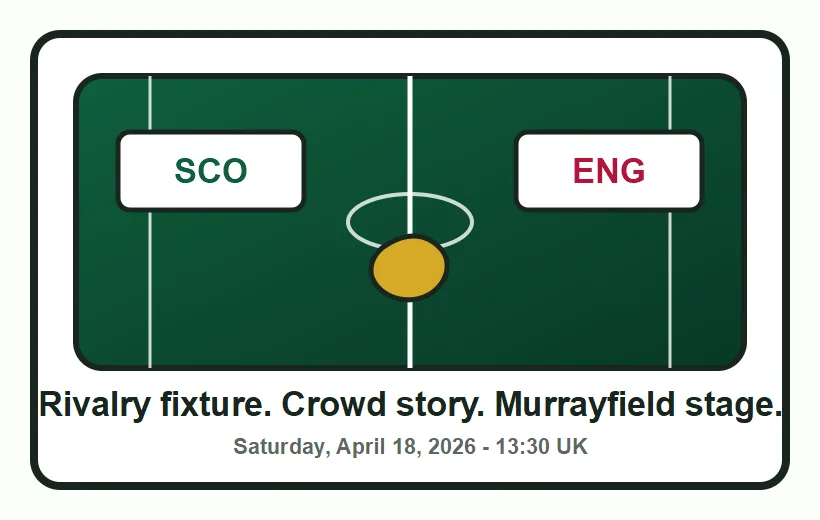

It answers the schedule query quickly
The match is listed for Saturday, April 18, 2026 at 13:30 local UK time at Scottish Gas Murrayfield. That gives the page a clean answer for users searching from different time zones.
Scotland host England at Scottish Gas Murrayfield on Saturday, April 18, 2026, with kickoff listed for 13:30 local UK time. For readers in the United States, that is 8:30 AM ET. The simple story is England's heavyweight profile meeting a Scottish home occasion that is being framed around a record crowd push.
This is the kind of fixture that works as a focused preview because the search intent is clear. People want the date, the kickoff time, the venue, and the reason the match matters. The official listing gives the match window. Scottish Rugby's own build-up gives the human angle: Scotland are trying to turn the England visit into a landmark crowd moment for the women's game in Scotland.
On the field, the story is straightforward without needing to guess at lineups. England enter any Women's Six Nations rivalry fixture with major attention because of the Red Roses' recent standard. Scotland's job is to make the home setting matter early, keep the scoreboard pressure honest, and give Murrayfield a match that feels bigger than a normal round entry.

The match is listed for Saturday, April 18, 2026 at 13:30 local UK time at Scottish Gas Murrayfield. That gives the page a clean answer for users searching from different time zones.
The build-up is not just a fixture listing. Scotland's home match against England is being positioned around a push for the largest ever Scottish women's rugby crowd.
This preview does not invent lineups. The safer angle is match context, venue, rivalry, and what to watch until official team sheets are available.
If I were opening this match cold, I would watch the first ten minutes around territory and Scotland's exit work. England can turn pressure into repeated phases very quickly, so Scotland's best chance to make the occasion feel live is to keep the match from becoming a one-way field-position story. That is not a prediction. It is the practical preview lens that makes this fixture more interesting than a plain schedule page.
More from our sites
This page sits inside a wider set of live guides, recaps, and utility pages. Use the short list below when you want a few direct jumps without loading a crowded directory page first.
More from our sites
This page sits inside a wider set of live guides, recaps, and utility pages. Use the short list below when you want a few direct jumps without loading a crowded directory page first.